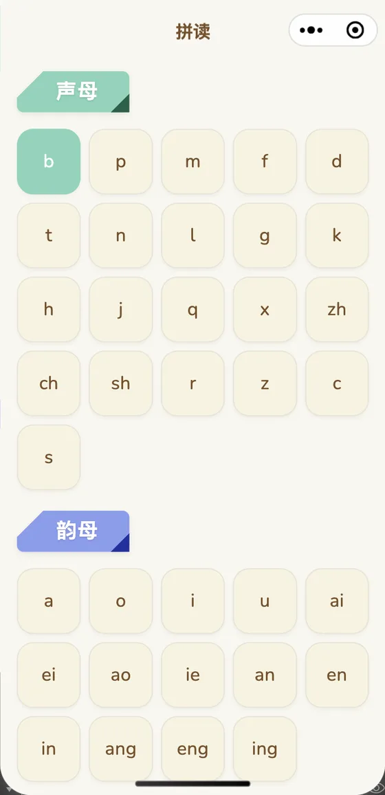
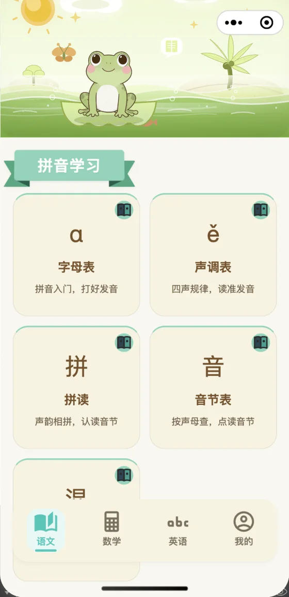
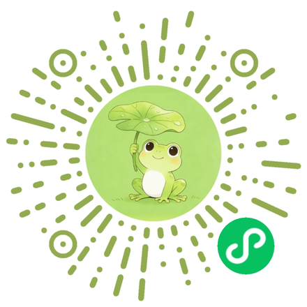
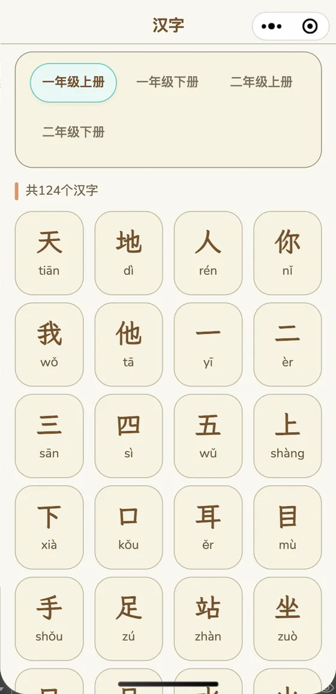
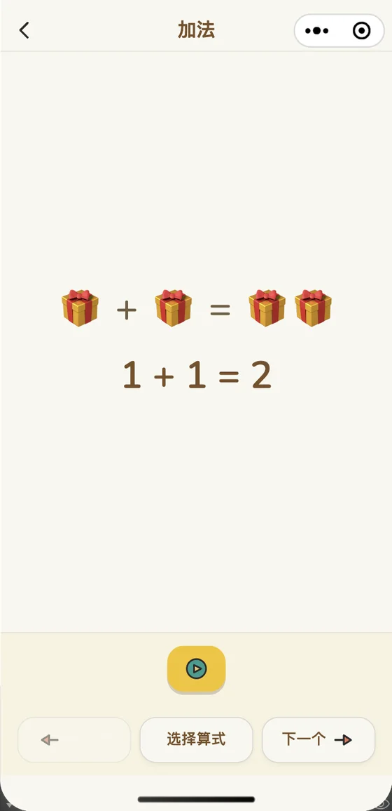
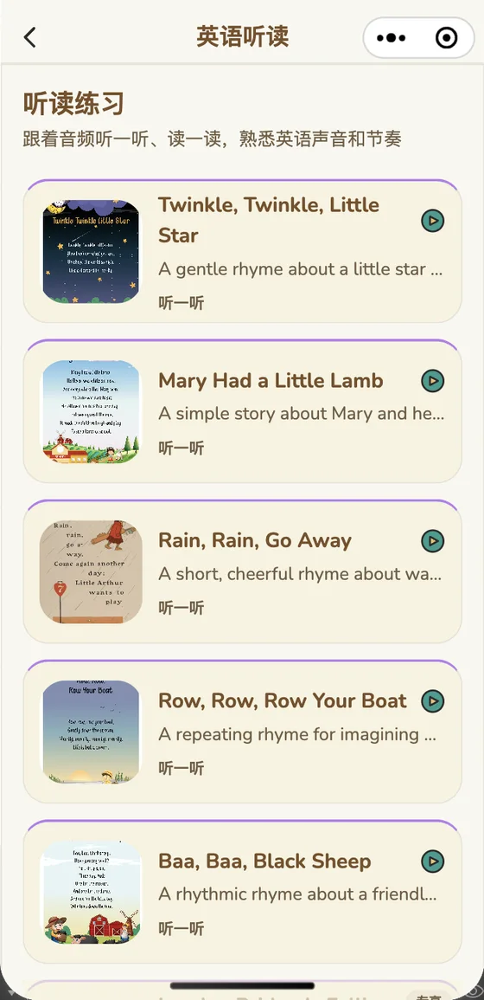
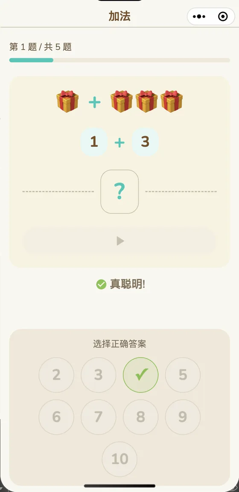

拼音
拼音：从字母表到拼读
从声母、韵母、整体认读音节，到四声、拼读、音节表、易混音对比。每个字母和音节都能点读；口型页演示发音时的嘴形。
- 字母表、声调表、拼读、音节表、易混音、口型
- 300 个拼读音节，点读发音
- 4 类听音测验，答错可重试

拼音、汉字、数学、英语，孩子自己点着练。没有充值入口，学习内容免费。


手机微信扫码；微信内可长按识别
电脑上请用手机微信扫码
把拼音、生字、古诗、口算、英语单词这些课内知识点，做成孩子能自己点、自己听、自己练的短练习。
它不是网课，也不是题库：没有直播、没有作业提交、没有排名；每页只做一件事，孩子打开就知道该点哪里。
语文、数学、英语三个学习板块，15 个学习主题、10 个测验。每个主题先学后测；学完就能练，错了可以再来。
小学一、二年级；需要课后巩固；家长不想一直陪着。
想找老师讲课；想刷大量题；想短期内提分。
语文、数学、英语三个学习板块，15 个学习主题、10 个测验。每个主题先学后测；学完就能练，错了可以再来。
从声母、韵母、整体认读音节，到四声、拼读、音节表、易混音对比。每个字母和音节都能点读；口型页演示发音时的嘴形。

798 个一、二年级生字，按学期分成四册。每个字有拼音、发音、词组和笔顺动画；先看笔顺，再跟着写一遍。

数一数建立数感；加法、减法用图形演示；20 以内用十格阵讲凑十和破十，进位、退位都能看见。

26 个字母的发音，3 个主题 30 个单词（动物、颜色、数字），6 首英语听读。听音选图，先把声音和意思对上。

答对了有庆祝，答错了是鼓励再试。没有红叉、没有倒计时、没有排名。
答对庆祝，答错鼓励再试；没有红叉、没有倒计时、没有排名。
每次测验都有星星，最低也有 1 星，永不 0 星。
学习和测验得小红花，攒够 4 朵换 1 款贴纸，一共 12 款。
关键操作有语音引导，识字量不多的孩子也能跟着点。

家长最关心的几件事，我们直接写清楚。
没有付费课程、没有付费解锁，学习内容免费。测验的困难档可以用学习时长解锁：每累计学习 3 天，自动得 1 天 VIP 时长（最多累积 7 天）。
孩子学习的页面里没有广告，也没有弹窗和开屏广告。家长专区有一个可自愿观看的激励视频入口，用来换 VIP 时长；不看也不影响孩子使用。
不用手机号、不用填表、不用登录。学习进度和奖励存在手机本地；清除缓存时 VIP 时长和小红花会保留。
它不是课程，也不替代老师；不承诺提分，也不做排名。内容按一、二年级课内知识点组织，适合课后短时巩固。
手机微信扫码，或在微信里搜一搜「小青蛙伴学」。
用手机微信扫描页面上的小程序码。在微信内也可以长按识别。
在微信搜索框输入「小青蛙伴学」，点小程序。
打开后点右上角「…」→「添加到我的小程序」，下次在微信首页下拉就能找到。
手机微信扫码；微信内可长按识别
电脑上请用手机微信扫码
电脑上请用手机微信扫码；微信电脑版可以在微信里搜一搜「小青蛙伴学」。
学习内容免费，没有充值入口。测验的困难档需要 VIP 时长，可以用学习时长解锁：每累计学习 3 天，自动得 1 天；家长也可以在家长专区自愿看激励视频换时长。VIP 时长最多累积 7 天。
小学一、二年级（6-8 岁）。内容按一年级识字量设计，学龄前可以向下兼容；如果孩子还没学拼音，建议家长陪第一遍。
不需要。没有账号、手机号或表单；学习进度和奖励存在手机本地。
内容按一、二年级课内知识点组织：拼音、识字、20 以内加减法、英语字母和单词。不是某一版教材的逐页配套，也不按学校进度自动推送。
孩子学习的页面里没有广告，也没有弹窗和开屏广告。家长专区有一个可自愿观看的激励视频入口，用来换 VIP 时长；不看也不影响孩子使用。
不需要账号，学习进度、VIP 时长和小红花都存在本机，不上传服务器。清除缓存时 VIP 时长和小红花会保留，其他进度会清空。
在微信里打开小程序后，点右上角「…」→「添加到我的小程序」；以后在微信首页下拉就能找到。
落地页可以在电脑上看；小程序要在手机微信里打开。电脑上用手机微信扫小程序码，或用微信电脑版搜一搜「小青蛙伴学」。
它不是课程，也不是题库；是把课内知识点做成孩子能自己操作的短练习，重点在愿意练、练得懂，不承诺提分。